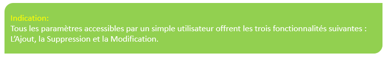
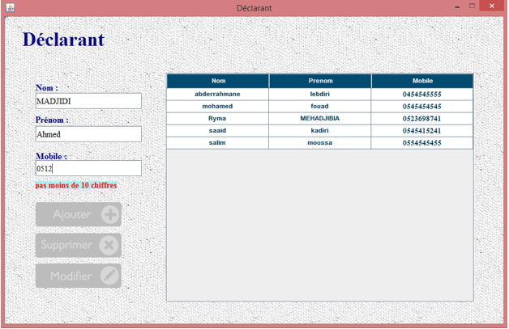
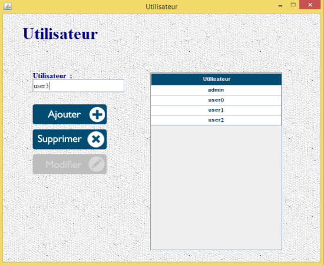
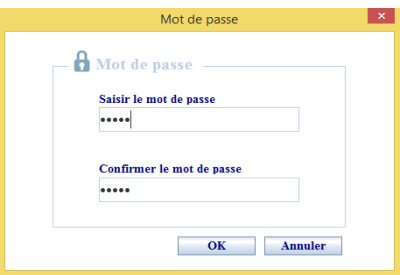

1. Paramètres (simple utilisateur):
Les paramètres accessibles par un simple utilisateur sont :
Chauffeurs, Camions, Marchandises, Types
Conteneur, Déclarants et Désignations.

Gestion des déclarants:

1. Pour ajouter un déclarant remplissez les champs Nom, Prénom et
Mobile. Si le numéro de téléphone est valide les bouton Ajouter et
Supprimer s'activent, cliquez sur Ajouter.
2. Pour supprimer un déclarant, sélectionnez le à partir du tableau ou
bien remplissez les champs précédants. Cliquez sur le bouton Supprimer.
3. Pour Modifier les informations d'un déclarant sélectionnez le
à partir du tableau, une fois vous modifiez un des trois champs le
bouton Modifier s'active, cliquez dessus.
2. Paramètres (Administrateur):
Les paramètres suivants sont accessibles uniquement par
l'administrateur : Infos Entreprise, Base de données, Historique
et Utilisateurs.
Infos Entreprise:
L'ongle Infos Entreprise offre la possibilité de modifier les
informations générales propres de l'entreprise.
Base de données:
Cet ongle offre l'avantage de sauvegarder ou restaurer la base de
donnée de l'application en vue d'assurer la continuité du travail en
cas d'éventuels problèmes techniques.
Historique:
L'historique sauvegarde tout action effectuée sur le systeme et
l'utilisateur qui l'avait fait même
l'admistrateur.
Gestion des Utilisateurs:

1. Pour ajouter un utilisateur il suffit d'écrire son nom et cliquer sur le bouton Ajouter. Une fenêtre nomée Mot de passe s'ouvre.

Saisissez le mot de passe puis confirmez le et en fin cliquez sur OK.
2. Pour supprimer un utilisateur sélectionnez le à partir du tableau ou
bien écrivez son nom. Cliquez sur le bouton Supprimer.
3. Pour modifier un utilisateur sélectionnez le
à partir du tableau, modifiez son nom si nécessaire puis cliquez sur le bouton Modifier, la fenêtre Mot de passe s'ouvre.
Si vous ne voulez pas modifier le mot de passe cliquez sur le bouton
Annuler sinon, saisissez le mot de passe puis confirmez le et en fin
cliquez sur OK.